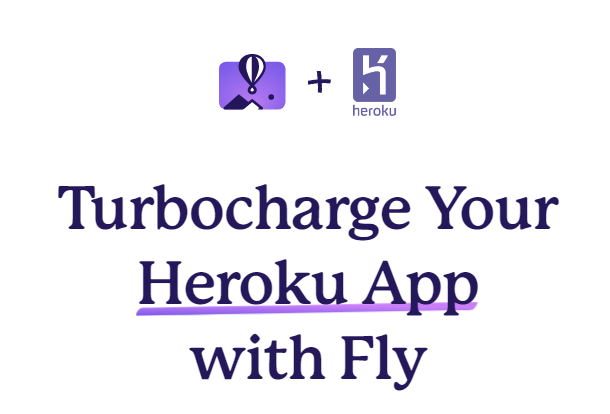
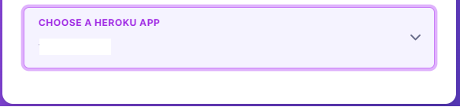
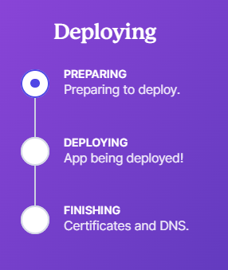

Migrate from Heroku to Fly.io
Too complicated? Not what you’re looking for?
Consider a hosted Nightscout service! Check for easier solutions here.
Fly.io
Fly.io proposes a simple migration wizard from Heroku] and you can create your new Nightscout site in Fly.io. Managing your site will require the use of a command line utility.
Pros:
Nightscout fits in the free tier
Easy to migrate an existing site from Heroku
Cons:
Maintaining your site requires the use command line instructions, not very intuitive
Migrated Heroku sites store variables as secrets
Relying on the MongoDB Atlas database
Step 1 - Migrate your Heroku app to Fly.io
a) Open the Fly.io Heroku migration page https://fly.io/launch/heroku.
{kind=link}
b) Click Sign in to Heroku.
{kind=link}
c) Enter your Heroku credentials and Log In.
{kind=link}
d) Allow Fly.io to access your Heroku account.
{kind=link}
e) In Configure Heroku you should see your name in the organization.
{kind=link}
f) For PICK AN APP NAME put the name of your new Fly.io Nightscout site (you can put the same than Heroku if you want).
{kind=link}
g) REGION is the physical location closer to you where the app will run. Leave default.
{kind=link}
h) The Heroku app you need to choose here is your Heroku Nightscout app.
{kind=link}
i) Click Deploy Heroku app!
{kind=link}
j) You need to enter a physical identification (to demonstrate you’re not a robot) this will be done using a credit card.
Select Click here to add a payment method...
{kind=link}
k) Enter you credit card information and click Save Card. You will be billed 0$ or a bank fee.
{kind=link}
l) You should be driven back to the screen shown on step i.
If you’re not, retry from the beginning and now Fly.io shouldn’t ask for a credit card anymore.
Deploy will start. Be patient and don’t click anything until it’s complete. It might take up to 20 minutes.
{kind=link}
m) When deployment is complete you will see the information of your new Fly.io Nightscout site.
The App URL is your Nightscout site web address, only it’s ending by .fly.dev instead of .herokuapp.com.
{kind=link}
n) If you open this URL you will see it’s replicating real time your Heroku Nightscout with the exact same settings.
Warning
Migrated sites will use a dedicated IP, that is a billable feature ($1.90/month). You will need to release the address and get a shared one. See here how to proceed.
Step 2 - Remove the Heroku webhook to Fly.io
a) By defaut Fly.io has made a link to Heroku so that whatever happens in Heroku (updates, variables changes, etc…) is mirrored to Fly.io.
You don’t want this.
You need to detach Fly.io from Heroku now.
Log in Heroku https://id.heroku.com/login
b) Select your Nightscout app, top right More, then View Webhooks.
{kind=link}
c) Scroll down to your webhook, open the menu at the end of the line and Remove it.
{kind=link}
d) Confirm with Delete.
{kind=link}
Your Fly.io Nightscout is now independent from Heroku.
Step 3 - Backup your Heroku variables
Heroku Variables
You cannot see your variables values in Fly.io. You cannot edit them. You MUST have a backup of your Heroku variables for maintenance purposes.
Reveal your Heroku Nightscout app Config Vars and copy all variables names and values in a spreadsheet.
Warning
Save this information in a safe place!
Step 4 - Downscale your webapp
You app will most probably be deployed on several virtual resources and this will generate costs!
Follow these guidelines to downscale it to one machine only.
Step 5 - Update your uploaders and downloaders
Now you will need to update all the devices connected to Nightscout with the new web address.
Change the URL!
Make sure you update the uploader and follower devices with the new fly.dev address!
To fully test your new Fly.io Nightscout app: put your Heroku app in maintenance mode.
If things don’t go as expected, you can disable it and return to Heroku whilst you fix it.